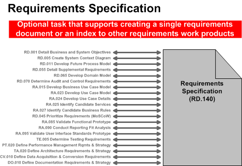

OUM |
Task Overview |
||
Method Navigation |
Current Page Navigation |
||
|
|
||||||||
The purpose of this task is to consolidate all the requirements into a unique document, the Requirements Specification. This task is only required when it is necessary to have a formal review. The Requirements Specification can contain both functional and supplemental requirements.
In a commercial-off-the-shelf (COTS) application implementation employing a solution-driven approach, the Requirements Specification (when required), captures only requirements representing changes the customer has requested to the pre-defined business processes comprising the business system functionality (solution) the customer organization will be implementing.
A.ACT.CR Consolidate Solution Requirements
B.ACT.CS Consolidate Specification
Requirements Specification
The Requirements Specification captures the complete software requirements for the system, or a portion of the system. Basically, it contains all requirement documents consolidated and organized into a single document.
You should follow these steps:
No. |
Task Step | Component | Component Description |
|---|---|---|---|
1 |
Collect the requirements. | Introduction | The Introduction contains the objectives and scope definition. You should include a glossary (RD.042) for any terms or acronyms. |
2 |
Produce the Overall Description. | Overall Description | The Overall Description describes the general factors, assumptions and dependencies that affect the product and its requirements. This section does not state specific requirements. Instead, it provides a background for those requirements that are defined in detail in the Specific Functional Requirements section, and makes them easier to understand. |
3 |
Determine which specific functional requirements you want to include in the Requirements Specification. | Specific Functional Requirements | The Specific Functional Requirements contains all the requirements identified in a structured format, for example, the Use Case Model or the Business Use Case Model, or both. It also contains all the non-functional (supplemental) requirements as associated to each use case included in the work product. |
4 |
Provide references to other requirement work products that have been prepared for the project. | Supporting Requirements Work Products | The Supporting Requirements Work Products includes references to other requirements captured in additional OUM work products. You should reference these tasks to determine the level of detail required for your project.
|
5 |
Determine which models or artifacts you want to include in the Requirements Specifications. | Models and Repository Artifacts | The Models and Repository Artifacts component refers to additional specific requirements-related models or artifacts that you may want to include in the Requirements Specification. For example, you may choose to include Business Process Models, Domain Model, or Business Rules. |
This task is optional and is usually performed whenever a formal review of the requirements is required. It allows project teams to develop the appropriate level of "deliverable" to satisfy the project needs. It does not provide guidance about how to detail the requirements, rather it simply provides a template, and guidance for creating a single Requirements Specification for your project, or to create an index that links to other requirements artifacts. Therefore, the Requirements Specification is used as a collection point or index to other requirements work products.
The following illustrates the various tasks where work products might be incorporated into the Requirements Specification.

The objective is to collect the requirements into a form that is accessible and understandable for the reviewers. By completing this task, you will produce a single requirements specification that captures a picture of the functional and non-functional requirements for the system. There are many industry examples for how this work product should look (IEEE template, etc.)
It is important to remember that use cases are requirements. The intent of the use case it to accurately detail what the system should do. It should not be necessary to convert use case to another format. However, use cases do not represent ALL of the requirements. Use cases do not document quality of service requirements, external interfaces, user interfaces, data formats, calculations, or business rules. Every organization collects requirements to suit its needs and may document this collection in a unique way.
You should also collect the requirements you have documented in business process models, domain models, and, if available, the business use case model. Organize the material into logical sections and use the collected material to produce the Overall Description. You should also include Business and System Objectives, a System Context Diagram, and any assumptions and constraints under which the requirements have been produced. In addition, if you know that there are still outstanding areas or subjects, include a note in order to prevent unnecessary review comments about missing requirements.
You should include a section on how the requirements can best be reviewed (i.e., a “How to Read” section), so that the reader understands how the different sections are related.
Reference the MoSCoW List (RD.045) to make sure all agreed upon requirements have been addressed in the Requirements specification. If your project is using a Requirements repository you may be able to use the tool to generate stakeholder appropriate views of the requirements.
The requirements specification includes both specific functional requirements as specified through Use Cases and process models as well as supplemental requirements that have been document in other OUM work products.
Consider the following requirements for inclusion in the Requirements Specification:
Functional Requirements
- Use case diagrams and use case descriptions - Use Case Model (RA.023)
- References or links to Use Case Specifications (RA.024)
- Process models that have been developed to capture detailed functional requirements
User Interface Requirements
- Storyboards - demonstrate the flow between screens and forms
- Wireframes - identify the data to be input, viewed or changed by a user
- Functional Prototypes
Reporting Requirements
- Reporting Fit Analysis (for existing COTS reports that are to be included
- Report layouts
- Behind-the-scenes logic to produce the report
- Calculations, sorting, summarization and transformation information
- Supplemental requirements related to the reports
- Volume, frequency, time to generate and amount of data for reports
Other types of requirements you may wish to include are:
Quality of Service Requirements (Non-Functional)
- Performance
- Security
- Usability, Reliability, Supportability, Maintainability, Scalability
- Safety
- Environmental (audit, globalization and localization, legal)
- Privacy
- Architecture, Interface (hardware, software)
- Operational
- Failure and disaster recovery
- Training
Testing Requirements – Reference the testing requirements that have been agreed to for the project.
Business Rules – Reference the Business Rules catalog for a list of the business Rules that support the functional requirements.
Services Catalog – If your project involves Service Oriented Architecture (SOA), reference the list of Services or the SOA Catalog for the project.
Data Requirements – Reference Class Diagrams, or Entity Relationship diagrams that have recorded the Data requirements
This task has supplemental guidance that should be considered if you are doing a Siebel CRM implementation. Use the following to access the task-specific supplemental guidance. To access all Siebel CRM supplemental information, use the OUM Siebel CRM Supplemental Guide.
This task has supplemental guidance that should be considered if you are doing a SOA Governance Implementation. Use the following to access the task-specific supplemental guidance. To access all SOA Governance Implementation supplemental information, use the OUM SOA Governance Implementation Supplemental Guide.
This task has supplemental guidance that should be considered if you are doing a Webcenter implementation. Use the following to access the task-specific supplemental guidance. To access all WebCenter supplemental information, use the OUM WebCenter Supplemental Guide.
This task involves the following method roles:
Role |
Responsibility |
% |
|---|---|---|
Business Analyst |
Consolidate requirements into a single Requirements Specification document. If a Business Requirements (or other) team leader has been designated, 20% of this time would be allocated to this individual, leaving 60% allocated to the business analyst. The team leader would then assist in the consolidation of the requirements into a single Requirements Specification document. |
80 |
System Architect |
Help consolidate requirements into a single Requirements Specification document. | 20 |
Ambassador User |
Help consolidate requirements into a single Requirements Specification document. | * |
* Participation level not estimated.
You need the following for this task:
Prerequisite |
Usage |
|---|---|
Project Management Plan (PMP) |
The scope must be included in the Requirements Specification to ensure that the reader understands the scope of the requirements. |
Applications Architecture (ENV.EA.140) |
Use this Envision work product or a similar enterprise-level document, if available. You may need this information before you can begin this task. Therefore, if it is not available, you should obtain this information prior to beginning this task. |
Business and System Objectives (RD.001) |
The Business and System Objectives should be included in the Requirements Specification to ensure the reader understands under which objectives the requirements have been determined. |
Future Process Model (RD.011) |
The high-level Future Process Model should be included, if available. |
Supplemental Requirements (RD.055) |
The Supplemental Requirements should be included, if available. |
Business Use Case Model (RA.015) |
The Business Use Case Model should be included, if available. |
Use Case Model (RA.023) Use Case Specification (RA.024) |
The Use Case Model and Use Case Specifications should be included, if available. |
Domain Model (RD.065) |
The Domain Model should be included, if available. |
MoSCoW List (RD.045.1) |
The following templates and tools are available to assist with this task:
Template File Name |
Comments |
|---|---|
| MS WORD |
Tool |
Comments |
|---|---|
The Requirements Specification is used in the following ways:
Distribute the Requirements Specification as follows:
Use the following criteria to check the quality of this work product:

Copyright © 2006, 2016, Oracle and/or its affiliates. All rights reserved.